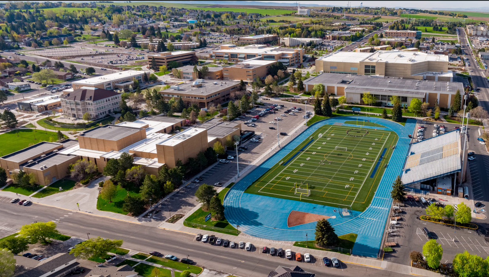

Who I Am
I am a passionate web developer focused on creating beautiful and functional websites. With a background in coding and design, I’m always eager to learn new skills and apply them to real-world projects. I love the challenge of problem-solving and enjoy collaborating with others on exciting projects.
My Background
Originally from Arizona, I have always had a strong interest in technology. Over the years, I’ve gained experience working with various web development tools and languages, including HTML, CSS, JavaScript, and more. I’m always striving to improve my skills and expand my knowledge.